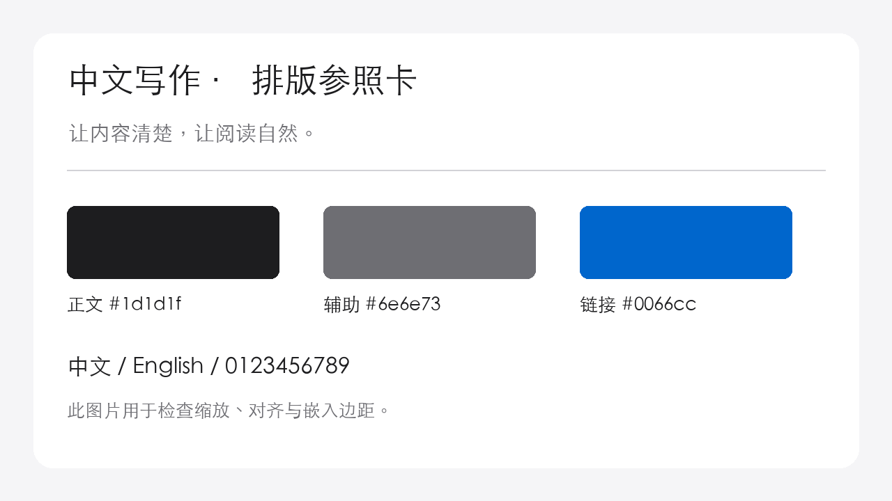

把日常写成
可以重读的文字
一篇关于观察、记录与理解的短文，也是一次中文排版的细节巡检。
切换左侧的浅色、深色与字号，观察文字的节奏。主题默认使用 PingFang SC；没有苹方的设备会使用本地备用字体。
网页复用主题 CSS，演示阅读排版。实时预览、双链、Bases 与 Canvas 的原生交互，请下载完整示例库，在 Obsidian 中检查。
一、清晨的一页
清晨醒来的时候，房间里还没有完全亮起来。窗帘边缘留着一道窄缝，光沿着墙面慢慢移动，落到桌上那本摊开的笔记旁。我原本打算立刻开始工作，却在打开电脑之前，先给自己倒了一杯水。这样的小动作并不值得写成一个宏大的道理，但它让一天有了可以辨认的起点：在回应别人的问题以前，先知道自己身在何处。
过去，我常把记录理解为保存结果。完成了一项任务，就写下完成；读完一本书，就摘录结论。后来重新翻阅这些笔记，我发现它们虽然整齐，却很难让我回到当时的处境。如果没有过程，结果就像离开地图的坐标，准确，却不容易理解。
于是，我开始给记录留下一点不确定。可以写“我暂时还没有想清楚”，也可以写“这只是今天的判断”。当文字不再承担证明自己正确的任务，它反而变得更诚实。
短句也应该有自己的位置。
文字之间，留一点呼吸
中文正文里夹杂 Obsidian、Markdown、API 与 macOS，是日常笔记常见的状态。17px、1.8 倍行高、720px 栏宽，以及 2026-10-09，都应自然融入文字。高亮用来标记值得重读的一句，斜体保留语气，删除线记录改变，而 链接 只在需要时提供一条旁路。
好的阅读环境，是让结构自然显现，让读者把精力留给理解，而不是辨认。
—— 关于记录的一点想法
二、从观察到行动
无序列表与长行折返
- 先观察，再判断。
- 这是一条刻意写长的列表项，用来观察圆点与首字之间的间距，以及文字折返后是否与第一行正文的起始位置对齐。不要只看第一行，也要留意下一行的起点。
- 为每一层留出清楚的关系
- 第一步：记录事实。
- 保留时间、场景和具体动作。
- 第二步：区分观察与解释。
- 第一步：记录事实。
有序列表与任务
- 重读一段昨天写下的文字。
- 把模糊的判断换成具体的例子；如果这一条有很多补充信息，换行后仍应保留清晰的悬挂缩进。
- 给明天留一个可执行的动作。
- 记录一个值得保存的瞬间
- 完成一次不急于下结论的重读
- 在不同宽度下检查列表
三、留出另一种声音
提示块应当容易辨认，也应当保留足够柔和的底色。标题、正文和边框之间的距离，需要在连续阅读中保持平衡。
一个例子不能说明所有情况。保留尚未回答的问题，有时比写出完整的结论更有帮助。
✓ 提示 · 点击展开
折叠可以收起补充内容，而不打断主线。这里使用浏览器原生折叠交互模拟阅读体验。
四、让细节保持清晰
| 元素 | 设计选择 | 阅读感受 |
|---|---|---|
| 中文正文 | 苹方优先 · 1.8 倍行高 | 自然，舒展 |
| 段落宽度 | 默认 720px | 容易找到下一行 |
| 链接与强调 | 蓝色链接 · 600 字重 | 清晰而克制 |
| Callout | 细边框 · 浅底色 | 保留层级，减少干扰 |
代码也有自己的节奏
行内的 font-family: "PingFang SC" 与正文保持协调。大段代码采用等宽字体，保留缩进并允许横向滚动。
/* 让排版服务于内容。 */
body {
--font-text-theme: "PingFang SC", sans-serif;
--font-text-size: 17px;
--line-height-normal: 1.8;
--file-line-width: 720px;
}四级标题 · 补充条件
较小标题仍然可辨认，但不必像章节标题那样占据过多空间。数字 3.1415926 与标点“”、——、《》也应该保有自然的比例。
五、给文字一个参照

完整示例库包含长文、关联笔记、图片、音频、视频、PDF，以及 Canvas 和 Bases 文件。数学公式、Mermaid、嵌入、脚注和实时预览，也可以在 Obsidian 中一起检查。
先把今天写下来。
理解，会在重读时发生。